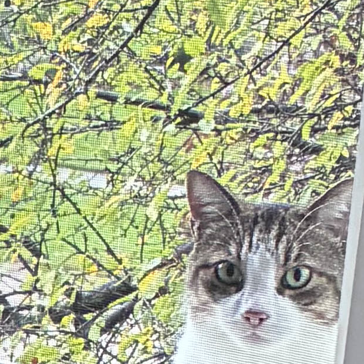
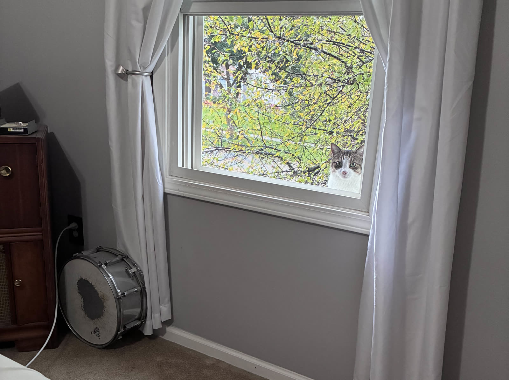
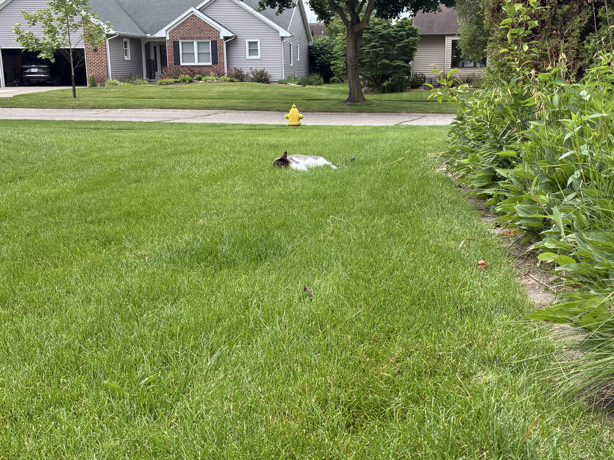
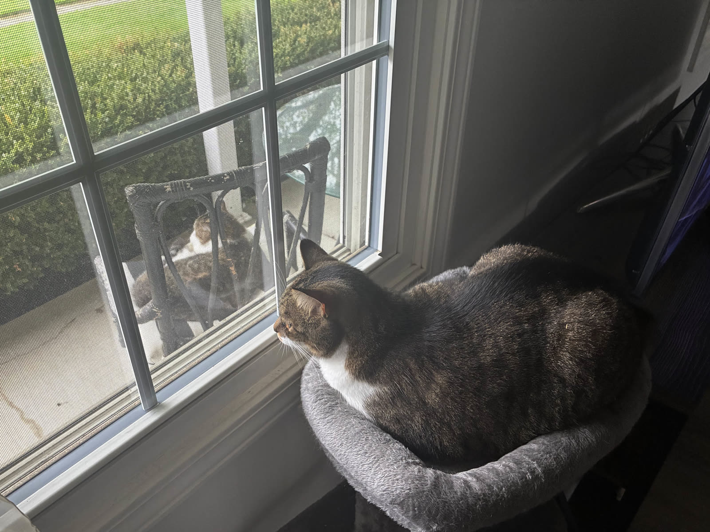
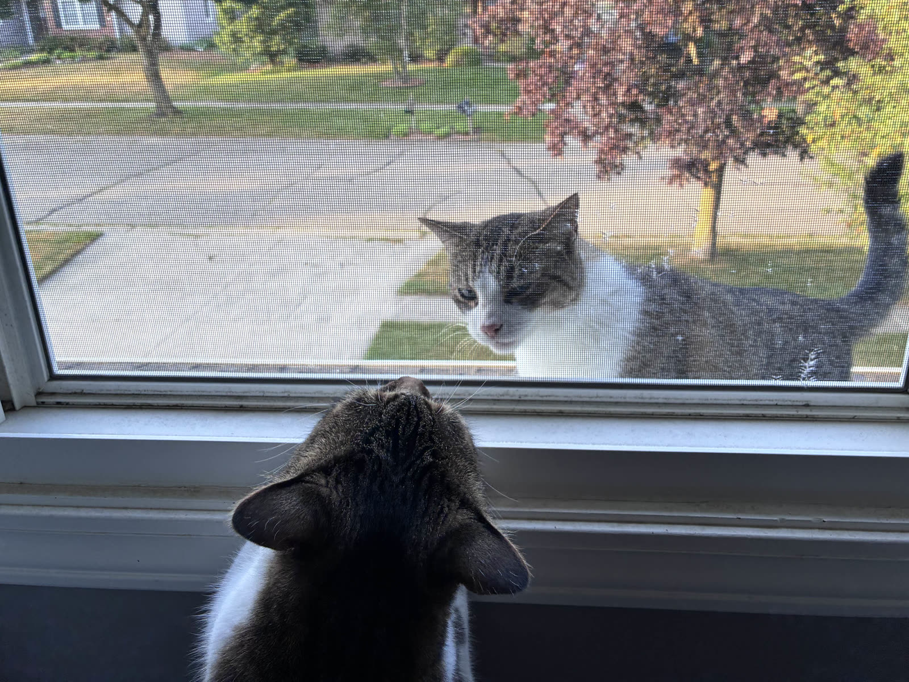
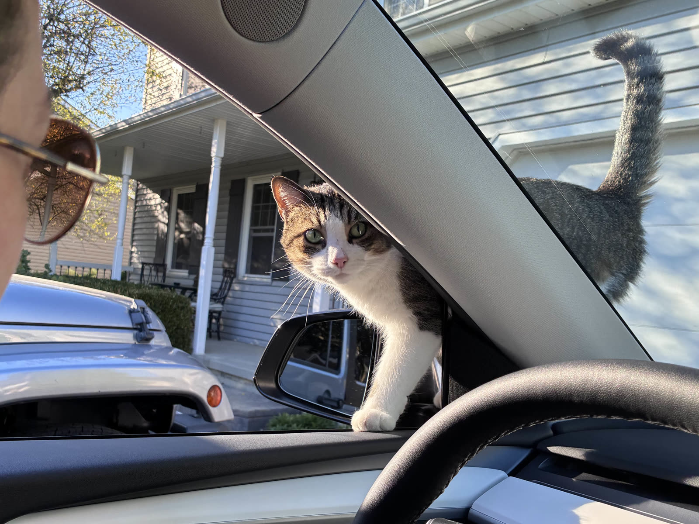
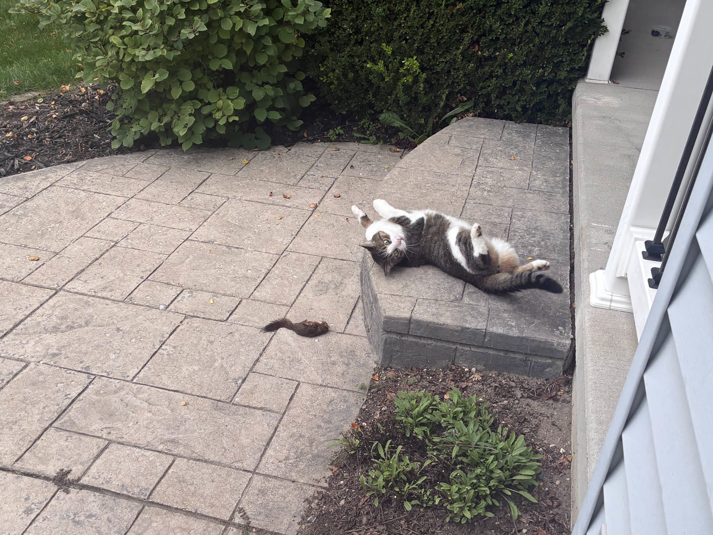

Urgent message
When Cosmo has something important to tell me, he doesn't wait for morning. He comes up to my window on the second floor and stays there until I wake up.
Whatever is going on out there, he makes sure I hear about it.

Lawn, occupied
As busy as he is as a man about town, Cosmo does take time to relax.
Some days that means finding the middle of the lawn, stretching out, and letting the neighborhood carry on without him for a while.

Oscar keeps watch
These two could be related. Oscar spends most of his time in his perch by the window, keeping watch.
Cosmo spends a good part of his day on our porch. He even has his own chair.

Nose to nose
That's Cosmo up on the roof again. I wasn't available for the urgent message this time, so he took it up with Oscar instead.
Nose to nose through the screen, the two of them talked it over.

Cosmo drives
We have a Tesla with an assisted driving mode, and Cosmo has decided that means he can drive it.
Here he is, checking in with the driver before he takes the wheel.

He brought dinner
Cosmo is a proud hunter, and he wants everyone to know it.
Here he is on the patio next to his latest catch, rolling around and very pleased with himself.